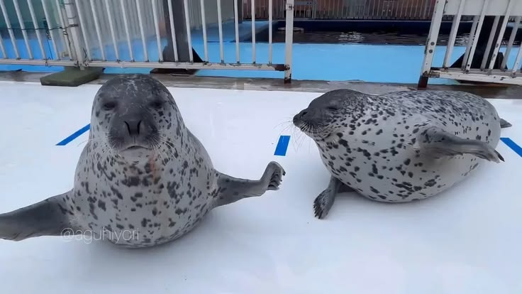
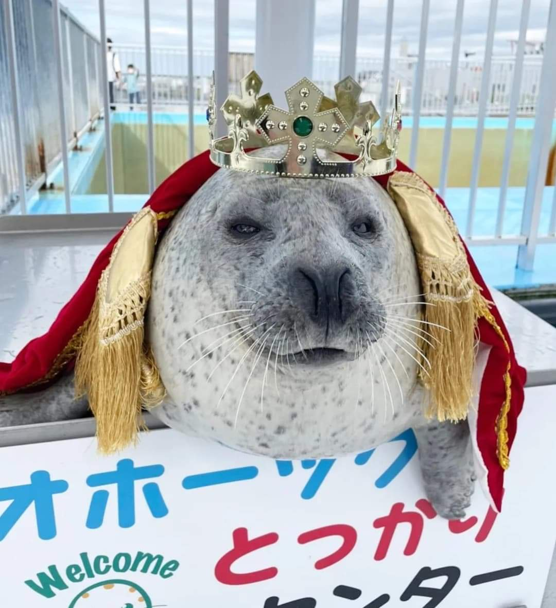

An Introduction to Spotted Seals
The spotted seal (Phoca largha), also known as the larga seal

or largha seal, is a species of true seal belonging to the family Phocidae. It is a northern seal that lives primarily in the cold waters of the North Pacific Ocean and surrounding seas. Spotted seals are closely associated with Arctic and sub-Arctic environments and are particularly well adapted to living around sea ice.The species gets its common name from the distinctive dark spots that cover its lighter-colored coat. Their fur can range from silver and gray to white, with dark, irregular spots spread across the body. They have rounded heads and relatively short flippers, giving them a recognizable appearance among northern seal species.
Like other true seals, spotted seals are mammals that breathe air, give birth to live young, and nurse their pups. Their bodies are streamlined for swimming, while their thick layer of blubber provides insulation in the cold waters where they live. Their front flippers help with steering, while their rear flippers provide much of their swimming propulsion.
What Does a Spotted Seal Look Like?
One of the easiest ways to identify a spotted seal is by its coat.

Their dense fur is generally silver, gray, or white, with dark irregular spots covering the body. Their heads are rounded, with a relatively narrow snout that can give them a somewhat dog-like appearance. Males and females are relatively similar in size and body shape, making it difficult to distinguish between the sexes based solely on appearance.Spotted seals are relatively small compared with some other seal species. Their compact bodies and short flippers are well suited to swimming through cold northern waters.Their appearance can sometimes make them difficult to distinguish from harbor seals, particularly in regions where the two species occur together.
Spotted Seals and Other Northern Seals
Spotted seals share their northern environment with several other species of pinnipeds, including ringed seals and other Arctic seals. They are particularly interesting to compare with ringed seals. Both species are true seals adapted to cold northern environments, and both use sea ice during important parts of their lives. However, they belong to different genera: spotted seals are members of Phoca, while ringed seals belong to Pusa.
Their habitats also overlap in parts of the North Pacific and Arctic regions. Comparing the two species helps demonstrate how different seal species can develop their own physical characteristics, behaviors, and preferred habitats while living in similar environments.